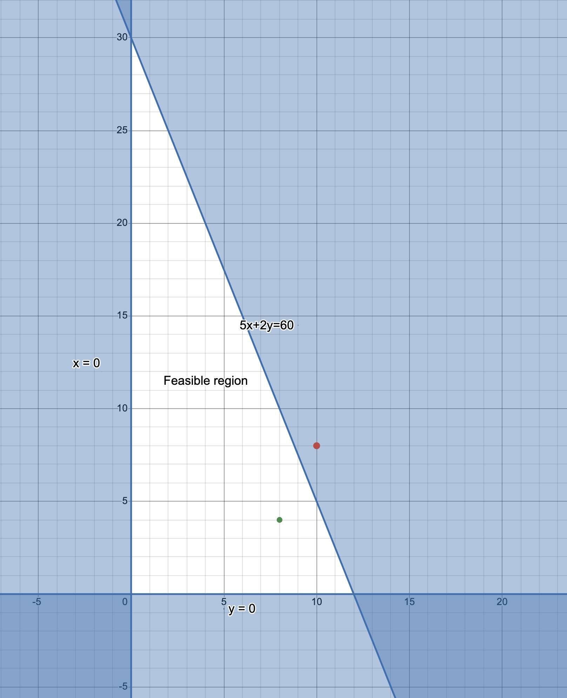

5 Geometric Method
5.1 Introduction to linear Programming
Managers are often called upon to make complicated decisions. For example, production managers often make decisions on what products to manufacture and in what quantities. In making such decisions, the manager must consider the available resources and how to utilize them for maximum profit. Note that resources are not limited to raw materials. They can include labor (human hours), farmland, machinery, etc. Resources, in general, are always limited and management must decide how to allocate them in order to get the maximum possible profit.
Linear programming (LP) is one of the most important methods used in management science to solve problems of the kind describe above. LP involves maximizing or minimizing a quantity, usually profit or cost, under some given constraints.
5.2 Mixture Problems & Charts
A mixture problem is a problem which includes combining limited resources to manufacture products that will generate maximum profit for the company.
These problems are common because most products that we use involve combining multiple resources in their production. Although there are other considerations in making production decisions, availability of resources is one of the most important constraints.
An optimal production policy (OPP) is a policy that,
(i) does not violate the constraints under which the company operates and,
(ii) yields maximum profit.Example 1
A toy manufacturer can manufacture only skateboards and, only dolls, or some kind of skateboards and dolls. Skateboards require 5 units of plastic and can be sold for a profit of $ 1, while dolls require 2 units of plastic and can be sold for $0.55 profit. Only 60 units of plastic are available.
- Make a mixture chart to model this situation.
- What numbers of skateboards and/or dolls should the company make to maximize profit?
Before we solve this problem, note that it is a mixture problem because:
Definite resources are available in limited quantities. The resource here is container units of plastic.
Definite products can be made by combining (mixing) the resources. The products here are skateboards and dolls.
Solution
- A mixture is a simple table that shows the resources, products, and profit. The chart displays the “verbal” information into a format that makes it easier to convert the problem to mathematical form (equations) that we can then solve. The rows of the mixture chart contain the products while the columns contain the resources and the profit margin.
Below is a mixture chart for the problem above:
| Products | Resource(s): Containers of plastic: 60 |
Profit (per unit) |
|---|---|---|
| Skateboard (x units) |
5 | $ 1.00 |
| Dolls (y units) |
2 | $ 0.55 |
There are several methods of solving linear programming problems such as the one provided above. Many of the methods follow the following general steps:
- Translating the problem into a mathematical form,
- Identifying a set of possible solutions (feasible region) and,
- Identifying a solution that would give us maximum profit, i.e., the optimal b production policy.
We will consider the geometric approach first and discuss its advantages as well as limitations then present a more general method in the next chapter. After you have understood how these methods work, you will have an opportunity to use technology (e.g., Excel spreadsheets, and web applications) to solve LP problems. Note, however, that technology may not help you in translating the problem into mathematical terms. That part is done by humans (YOU).
5.3 The Geometric Method
The geometric method of solving linear programming problems involves creating a graph to visualize the feasible region (the set of likely solutions) and then identifying the correct solution from the feasible region. Since the inequalities involve linear functions, the feasible region is polygonal in shape. The type of polygon formed (triangle, quadrilateral, pentagon, etc) depends on the number of constraints you have.
A feasible set (region) for an LP problem is the collection of all physical
possible solution choices that can be made. Let us proceed with the solution to Example 1. We will start by converting the problem into mathematical terms (inequalities and equations), creating a feasible region, and then use a technique called the corner point principle to choose the best solution from the feasible region.
5.3.1 Converting Mixture Chart into Mathematical Form
First, we know that we cannot manufacture negative number of objects (skateboards of dolls). So, negative numbers are not permitted in this context. Note however, that 0 is a possible number. Thus, we have two inequalities;
\[x \ge 0 \hspace{.04in} \text{and} \hspace{.04in} y \ge 0\]
The symbol \(>\) means grater than while \(\ge\) means greater than or equal to.
We call the above two inequalities minimum constraints because they tell us the minimum that we can have for each product.
Since we have a limited supply of resources (in this case 60 units of plastic) we must also have inequalities for resource constraints. Since we need 5 units of plastic to manufacture ONE skateboard, we will need \(5x\) units to manufacture x units of skateboards. Similarly, we will need \(2y\) units of plastic to manufacture y dolls. In total, we need \(5x+2y\) units of plastic to manufacture the dolls and skateboard. This value must not exceed 60. Thus, we have the inequality,
\[5x+2y\le60\]
Notice that this time, we use the symbol for less than or equal to.
In this problem, we only have 3 inequalities but in a realistic problem, there would be hundreds or even thousands of them.
The last step in formulating the mathematical model is to make the objective function. This is the function that connects the profit to the resources. Since we know that each skateboard results in $1.00 profit, we know that x dolls will result in a profit of \(\$1x\) and y dolls will result in a profit of \(\$0.55x\). We do not know what the profit is but we know it is a function of both dolls and skateboards. We can denote the profit as \(P\). So, we have the equation,
\[P=1x+0.55y\] Notice that the objective function is an equation (not inequality) that gives a specific amount of profit as we vary the number of skateboards and dolls. In other words, \(P\) changes as we change \(x\) and \(y\). So we can determine the value of \(x\) and\(y\) that would produce maximum \(P\).
5.3.2 Visualizing the Feasible Region
After creating the inequalities from the mixture chart, we can draw a picture to help us visualize the feasible region geometrically. Graphs are the most commonly used tools for visualizing the feasible region.
Notice that all the three inequalities (i.e., the minimum and resource constraints) are linear in the sense that when you graph them (assuming an equal sign) you will get a straight line. To take care of the fact that the inequalities admit a broad range of values, we,
- Use a dotted line if the inequality is strictly less \((<)\) or greater \((>)\) and shade the region representing the constraints. For example, if \(y>2\), we draw a dotted line for \(y=2\) and shade the region above the line on the graph (this is the region that obeys the constraint).
- Use a bold line if the inequality allows equality.
Below is a graph of the feasible region for our problem above. We have shaded the region where x values and y values are greater than 0, as well as the region where \(5x+2y\) is less than or equal to 60.
All points within the region labelled “feasible region” are possible solutions to our problem in the sense that they do not violate the constraints. For example, the feasible point \((8,4)\) requires the company to manufacture 8 skateboards and 4 dolls. This “solution” does not violate any of the constraints given in the problem. To find the profit associated with this point, we use the objective (profit) function to compute the profit as follows:
$$
\[\begin{align} P&=x+0.55y\\ &=8+(0.55\times 4)\\ &=\$10.20 \end{align}\]
$$
Now, it is easy to show that there is a different point within the feasible region that would yield a higher profit while still obeying the constraints. Take, for example, the point \((2,20)\) which means 2 skateboards and 20 dolls. The profit for this choice would be higher. See below:
$$
\[\begin{align} P&=1.00 x+0.55y\\ &=2+(0.55\times 20)\\ &=\$13.0 \end{align}\]
$$
Choosing a point in the feasible region that would result in maximum profit (optimal production policy) is not a trivial task. However, there is an genius technique known as The Corner Point Principle which we discuss next.
5.3.3 The Corner Point Principle
The corner point principle has been touted as one of the most important insights into the theory of linear programming. The principle states that,
In a linear programming problem, the maximum value for the profit formula always
corresponds to a corner point of the feasible region.For our feasible region above, there are three corners. These corners have coordinates \((0,0)\), \((0,30\), and \((12,0)\). So, we use the profit function to compute the profit associated with each of these 3 points and choose the highest as our optimal production policy. See the calculations below:
For \((0,0)\), the profit would be \(P=1.00 (0)x+0.55(0)=\$0.00\)
For \((0,30)\), the profit would be, \(P=1.00 (0)x+0.55(30)=\$16.50\)
For \((12,0)\), the profit would be, \(P=1.00 (12)x+0.55(0)=\$12.00\)
Therefore, the optimal production policy would be to manufacture 0 skateboards and 30 dolls.
NOTE: In the real world, there would be a lot more corners which would make this process cumbersome. However, as mentioned earlier, there are computer programs that can do the job faster and more efficiently than humans.
5.3.4 Summary of the Geometric Method
- Read the problem carefully to identify resources and products.
- Make a mixture chart for the problem.
- Assign an unknown quantities (often \(x\), and \(y\)) to each product and use the mixture chart to write the resource and minimum constraints.
- Write the profit formula as well.
- Create a feasible region by graphing ther inequalities (you can use a program such as Geogebra or Desmos).
- Find the coordinates of the corner points and evaluate the profit for each. The corner that gives maximum profit is the optimal production policy.
In the next example, we extend the toy problem above to include one more resource (person minutes). Read below:
Example 2
A toy manufacturer can manufacture only skateboards and, only dolls, or some kind of skateboards and dolls. Skateboards require 5 units of plastic and can be sold for a profit of $ 1, while dolls require 2 units of plastic and can be sold for $0.55 profit. Only 60 units of plastic are available. Furthermore, making one skateboard requires 15 person-minutes while making one doll requires 18-person minutes. There are only 360 person-minutes available.
- Make a mixture chart to model this situation.
- What numbers of skateboards and/or dolls should the company make to maximize profit?
Solution
- Below is the new mixture chart,
| Products | Resource 1: Plastic: 60 |
Resource 2: person-minutes 360 |
Profit |
|---|---|---|---|
| Skateboard (x units) |
5 | 15 | $ 1.00 |
| Dolls (y units) |
2 | 18 | $ 0.55 |
- We start by writing down the inequalities (constraints) and the profit function.
We still have the same minimum constraints as from example 1: \[x \ge 0 \hspace{.04in} \text{and} \hspace{.04in} y \ge 0\] For the resource constraints, we have two inequalities because we have two resources:
For the plastic, we have \[5x+2y\le60\]
For the person hours, we have, \[15x + 18y \le 360\]
The profit function stays the same: \[P=1x+0.55y\]
Next, we create a feasible region by graphing the inequalities. Notice that this new feasible region is smaller than the first and it has four corner points. The fourth point is as a result of the new inequality created by the additional resource constraints. As indicated earlier, the more resources you have, the more the corner points you expect.

The last step is to use the corner principle to find the optimal production policy: We check the profits for each of the corner:
For \((0,0)\), the profit would be \(\$0\).
For \((0,20\), the profit would be, \(P=1.00 (0)x+0.55(20)=\$11.00\)
For \((6,15\), the profit would be, \(P=1.00 (6)x+0.55(15)=\$14.50\)
For \((12,0\), the profit would be, \(P=1.00 (12)x+0.55(0)=\$12.00\)
Thus, in this new problem, the optimal production policy is 6 skateboards and 15 dolls for a maximum profit of $ 14.50.
5.4 Exercises
For each description in exercises 1-4, create a mixture table and write one or more resource constraint inequalities. The unknown to use for each product is given in parenthesis:
- Manufacturing one package of hot dogs(x) requires 6 oz of beef, and manufacturing one package of bologna (y) requires 4 oz of beef. There are 300 oz of beef available.
- It takes 30 ft of 12-in. board to make one bookcase (x); it takes 72 ft of 12-in. board to make one table(y). There are 420 ft of 12-in. board available.
- Manufacturing one salami(x) requires 12 oz of beef and 4 oz of pork. Manufacturing one bologna (y) requires 10 oz of beef and 3 oz of pork. There are 40 lb of beef and 480 oz of pork available.
For each of the following exercises, graph the feasible region, label each line segment bounding it with appropriate equation, and give the coordinates of every corner point.
\(x\ge 0\) ; \(y\ge 0\); \(2x+y\le10\)
\(x\ge 0\) ; \(y\ge 0\); \(x+2y\le12\); \(x+2y\le8\)
\(x\ge 2\) ; \(y\ge 6\); \(3x+2y\le30\)
Determine whether the points \((2,4)\) and/or \((10,6)\) are points of the feasible region in exercises 4, 5, and 6.
Determine the maximum value of \(P\) given by \(P=3x+2y\) subject to the constraints \(x\ge 0\), \(y\ge 0\), \(x\le 7\), and \(y\le 5\).
A linear programming problem has the following constraints: \(x\ge0\), \(y\ge0\), \(5x-y\le15\), and \(4y+x\le24\).
- Without graphing, determine the corner points of the feasible region for the LP problem?
- Sketch a graph of the feasible region.
- Without graphing, determine the corner points of the feasible region for the LP problem?
Nuts Galore sells two spiced nut mixtures: Grade A and Grade B. Grade A requires 7 oz of peanuts and for every 8 oz of almonds. Grade B requires 9 oz of peanuts for every 8 oz of almonds. There are 630 oz of peanuts 640 oz of almonds available. Grade A makes Nuts Galore a profit of $1.70, and Grade B makes a profit of $2.40 per unit assembled. How many units of Grade A and Grade B nut mixtures should be made to maximize the company’s profit, assuming that all the units can be sold?
Find the maximum value of \(P\) where \(P=3x+2y\) subject to the constraints \(x\ge3\), \(y\ge2\), \(x+y\le10\), and \(2x+3y\le24\).
A clothing manufacturer has 600 yd of cloth available to make shirts and decorated vests. Each shirt requires 3 yd of material and provides a profit of $5. Each vest requires 2 yd of material and provides a profit of $2. The manufacturer wants to guarantee that under all circumstances, there are minimums of 100 shirts and 30 vests produced. How many of each garment should be made to maximize the profit? If there are no minimum quantities, how, if at all, does the optimal production policy change?
A paper recycling company uses scrap cloth and scrap paper to make two different grades of recycled paper. A single batch of grade A recycled paper is made from 25 lb of scrap cloth and 10 lb of scrap paper, whereas one batch of grade B recycled paper is made from 10 lb of scrap cloth and 20 lb of scrap paper. The company has 100 lb of scrap cloth and 120 lb of scrap paper on hand. A batch of grade A paper brings a profit of $500, whereas a batch of grade B paper brings a profit of $250. What amounts of each grade should be made? How, if at all, do the maximum profit and optimal production policy change if the company is required to produce at least one batch of each type?
Courtesy Calls makes telephone calls for businesses and charities. A profit of $0.50 is made for each business calls and $0.40 for each charity call.It takes 4 min (on average) to make a business call and 6 min (on average) to make a charity call. If there are 240 min of calling time to be distributed each day, how should that time be spent so that Courtesy Calls makes a maximum profit? What changes, if any, occur in the maximum profit and optimal production policy if they must make at least 12 business calls and 10 charity call every day?
A factory manufactures chairs and tables, each requiring the use of three operations: Cutting, Assembly, and Finishing. The first operation can be used at most 39 hours; the second at most 42 hours; and the third at most 23 hours. A chair requires 1 hour of cutting, 2 hours of assembly, and 1 hour of finishing; a table needs 2 hours of cutting, 1 hour of assembly, and 1 hour of finishing. If the profit is $20 per unit for a chair and $30 for a table, how many units of each should be manufactured to maximize profit?